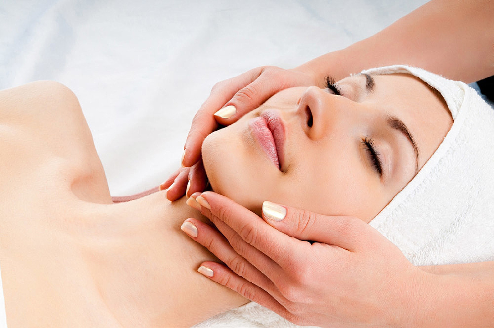
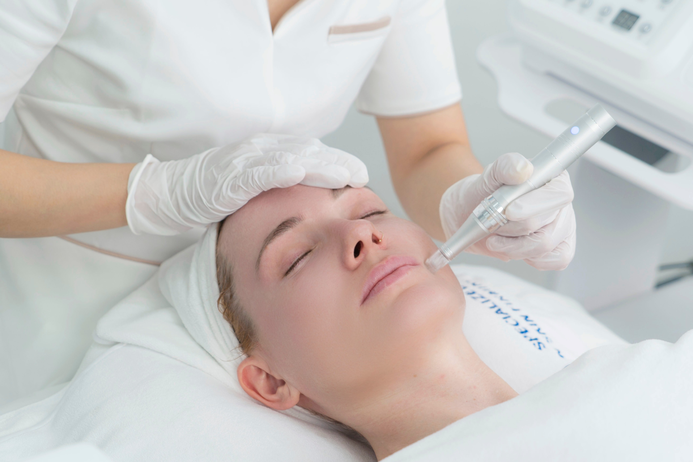

Facial Treatment
Eye Care
Barrier Renovation Master Skin Rejuvenation Management Course
Targeted level: epidermis (epidermis-customized course for rough and dry skin)Techniques/equipment: Keli DC instrument + Keli facial youthful technique
Main efficacy products: Absolute Energy Essence, Absolute Time-Cooling Essence Oil, Absolute Intensive Anti-Wrinkle Cream
Core ingredients: bifida yeast fermentation product filtrate, 4D hyaluronic acid, European Fagus sylvatica bud extract, American jojoba seed oil, German coenzyme Q-10, fibronectin, serum albumin
Effect description: Rebuild healthy barrier, lock in nutrients and moisture, prevent inflammatory bacteria from invading, and present delicate, watery, translucent and shiny healthy skin
Operation process: Cleansing-(DC ion purification + essence)-(essence 10 pumps + essence oil 3 pumps + anti-wrinkle cream 5g) with techniques-toning-mask-moisturizing

Microecological rescue and weak management course
Targeted level: epidermis (epidermis-sensitive skin acne skin customized course)Techniques/equipment: Keli DC instrument + Keli facial light-age technique
Main functional products: Absolute Energy Essence, Absolute Intensive Anti-wrinkle Lotion, Absolute Time-free Essence Oil
Core ingredients: filtrate of bifid yeast fermentation products, 4D hyaluronic acid, hydrolyzed conchiolin, European Fagus sylvatica bud extract, American jojoba seed oil, German coenzyme Q-10
Effect description: Supplement probiotics to balance bacteria, enhance the immunity of beneficial bacteria, strengthen the skin's resistance to the outside world, and maintain a healthy state continuously.
Operation process: Cleansing-(DC ion purification + essence)-(anti-wrinkle lotion 10 pumps + essence oil 3 pumps) with techniques-toning-mask-moisturizing
Basement membrane cell remodeling health management course
Targeted level: basement membrane layer (basement membrane layer-sensitive and inflammatory muscle repair customized course)Hand skills/equipment: Keli ATS introduction
Main functional products: Absolute Revitalizing and Stabilizing Skin Base Liquid, Absolute Primacare Intensive All-Effect Mask, Absolute Revitalizing Anti-Essence Gel
Core ingredients: small molecule oligopeptide-1, β-glucan + white lupine extract, sodium guaiac sulfonate, French sea fennel stem cells, French coastal eryngium stem cells, lactic acid, 4-fold hyaluronic acid,
Effect description: Strengthen the basement membrane with golden density, prevent harmful substances from invading, and improve skin health from the root.
Operation process: cleansing-toning-1 Absolute Revitalizing and Stabilizing Skin Base Liquid with ATS introduction-(1 mask + 3~4 full pumps of essence gel)-toning-moisturizing


Basement membrane black angel whitening management course
Targeted level: basement membrane layer (basement membrane layer-customized course for dark spots and dark skin)Hand skills/equipment: Koli H&C introduction + ATS introduction
Main functional products: Absolute Brightening Anti-Aging Essence Gel, Absolute Anti-Wrinkle Essence, Absolute Brightening Stabilizing Essence, Absolute Priming Intensive Mask
Core ingredients: multiple hyaluronic acid, lactic acid, pure dry powder 3-Centella Asiatica, anti-wrinkle complex peptide, small molecule oligopeptide-1, β-glucan + white lupine extract, sodium guaiac sulfonate, French sea fennel stem cells
Effect description: restore the normal absorption and metabolic circulation of the basement membrane, timely metabolize and purify melanin, regulate melanin sensitivity, and make the skin white and bright from the inside to the outside.
Operation process: Cleansing - Toning - Apply Absolute Rejuvenating Anti-Aging Essence Gel for 5 minutes - (Absolute Rejuvenating Anti-Aging Essence + H&C Infusion) - Absolute Rejuvenating and Stabilizing Essence 1 bottle with ATS Infusion - All-effect Mask - Toning - Moisturizing
Dermal collagen PLUS support management course
Targeted level: dermis (dermis - customized course for sagging and loose skin)Hand skills/equipment: Keli 5D introduction
Main functional products: Absolute Radiance Revitalizing Essence, Absolute Radiance Intensive Anti-wrinkle Lotion, Absolute Privilege Intensive All-effect Mask
Core ingredients: Peruvian black orchid, Swiss biomimetic conoin peptide, German Anxinjia, hydrolyzed conchiolin, European Fagus sylvatica bud extract, sodium guaiacine sulfonate, French sea fennel stem cells, French coastal eryngium stem cells
Effect description: Activate autologous collagen regeneration, directly replenish the lost and broken collagen fibers in the dermis, enhance collagen water-locking power, increase collagen density, and make the skin soft, firm and plump.
Operation process: Cleansing - Toning - (1 essence + 10 pumps of anti-wrinkle lotion) with 5D introduction - mask - toning - moisturizing


Fascia Black Diamond Lifting and Wrinkle Management Course
Targeted level: Fascia layer (dermis layer-customized course for loose contours)Hand skills/equipment: Keli 5D introduction + ATS introduction
Main functional products: Absolute Revitalizing Essence, Absolute Revitalizing Intensive Anti-wrinkle Emulsion, Absolute Revitalizing Stabilizing Skin Base Lotion, Absolute Privilege Intensive All-effect Mask
Core ingredients: Peruvian black orchid, Swiss biomimetic conoin peptide, German Anxinjia, hydrolyzed conchiolin, European Fagus sylvatica bud extract, small molecule oligopeptide-1, β-glucan + white lupine extract, sodium guaiac sulfonate, French sea fennel stem cells, French coastal eryngium stem cells
Effect description: tighten the loose fascia layer, lift every inch of facial muscle, improve wrinkle depth, smooth lines, and reshape facial contours.
Operation process: Cleansing - Toning - (1 essence + 10 pumps of anti-wrinkle lotion) with 5D introduction - 1 pure revitalizing and stabilizing skin base liquid with ATS introduction - mask - toning - moisturizing
FOOTER